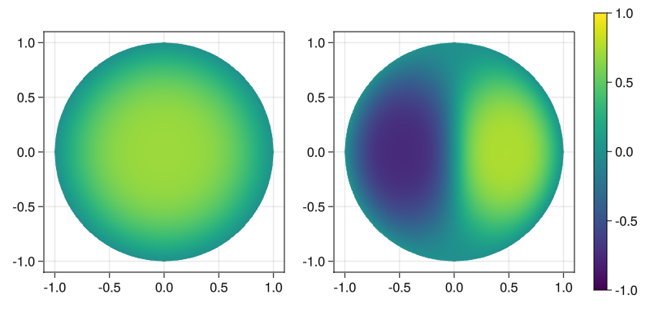

First two eigenfunctions on the unit disk
We calculate the first two eigenfunctions of $\Delta_p$ on the unit circle for $p=1.4$, using the provided triangulation in circle.msh
using DynamicPLaplacian, Gridap, LinearAlgebra, FileIO
const DPL = DynamicPLaplacian
p = 1.4
# create context
gctx = GridapContext("assets/circle.msh")
lmmctx = DPL.LMMContext(p, gctx)
U = gctx.U
# initial guess
initial1 = interpolate(x -> 1-norm(x)^2, U).free_values
initial2 = interpolate(x -> sin(π * x[2]) * (1-norm(x)^2), U).free_values
# first eigenfunction
result1 = local_min_max([], initial1, lmmctx;
verbose = false, max_it=45,
pgrad_stop=1e-3)
# second eigenfunction
result2 = local_min_max([result1.u], initial2, lmmctx;
verbose = false, max_it = 45,
pgrad_stop = 1e-3)Again, the plots can be done with GridapMakie:
using GridapMakie, GLMakie, FileIO
u1 = FEFunction(gctx.U, result1.u)
u2 = FEFunction(gctx.U, result2.u)
fig = Figure(resolution=(800,400))
ax = Axis(fig[1, 1], aspect = 1)
ax = Axis(fig[1, 2], aspect = 1)
pl1 = plot!(fig[1,1], gctx.Ω, u1, colorrange=(-1,1), colormap=:viridis)
pl2 = plot!(fig[1,2], gctx.Ω, u2, colorrange=(-1,1), colormap=:viridis)
Colorbar(fig[1,3], pl1)